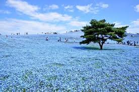
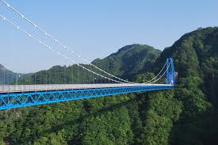
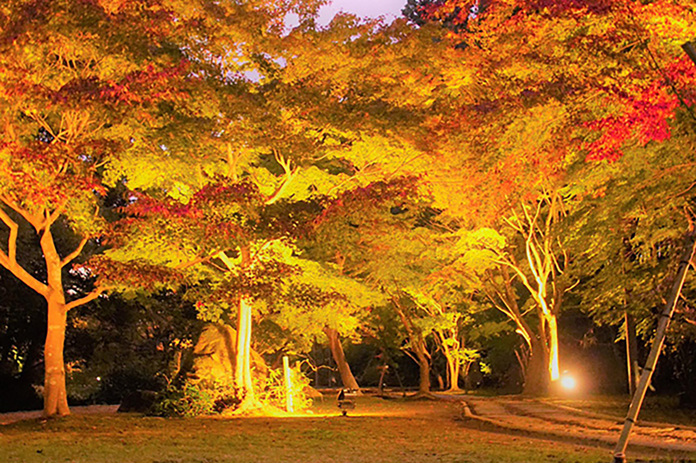
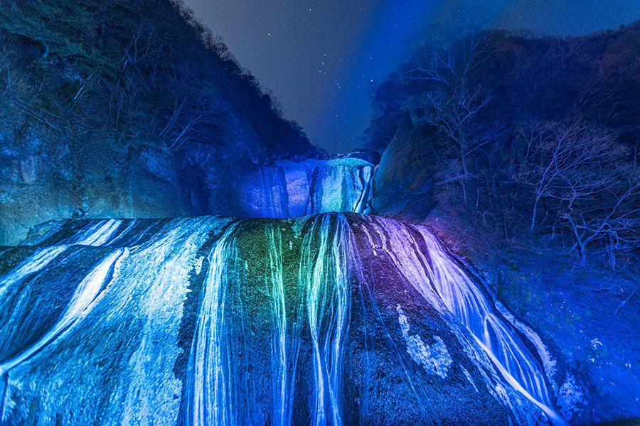

茨城県観光スポット（季節別）
春

ネモフィラの名所として有名な茨城県の国営ひたち海浜公園。3月下旬～5月中旬頃まで春のフラワーリレーが楽しめ、スイセン、チューリップやネモフィラが次々と開花。
4月中旬から5月上旬にかけて約530万本のネモフィラが「みはらしの丘」を青一色に染め上げ、空と海と丘が一体化したかのような絶景パノラマが広がります。
夏

竜神大吊橋は、奥久慈県立自然公園の中にある吊り橋です。橋の長さは375メートル、高さは100メートルで歩行用吊り橋としては日本一の長さを誇ります。
竜神大吊橋の目玉といえば、バンジージャンプ。高さ100メートルからのジャンプはスリル満点です。
秋

偕楽園のもみじ谷は護国神社の麓にあります。入口から約400m程続いており、約170本のもみじやカエデが植えられています。
毎年11月上旬から下旬にはライトアップが行われ、幻想的な景色が広がっています。
冬

茨城県を代表する観光スポット、袋田の滝。
日本三名瀑に数えられ、高さ120メートル、幅73メートルの大きさを誇ります。
寒さ厳しい冬には滝全体が真っ白に凍結し、その神秘的な風景は「氷瀑」と呼ばれています。
巨大な滝が凍りつく姿はまるで時間が止まったかのようで神秘的な光景をみることができます。